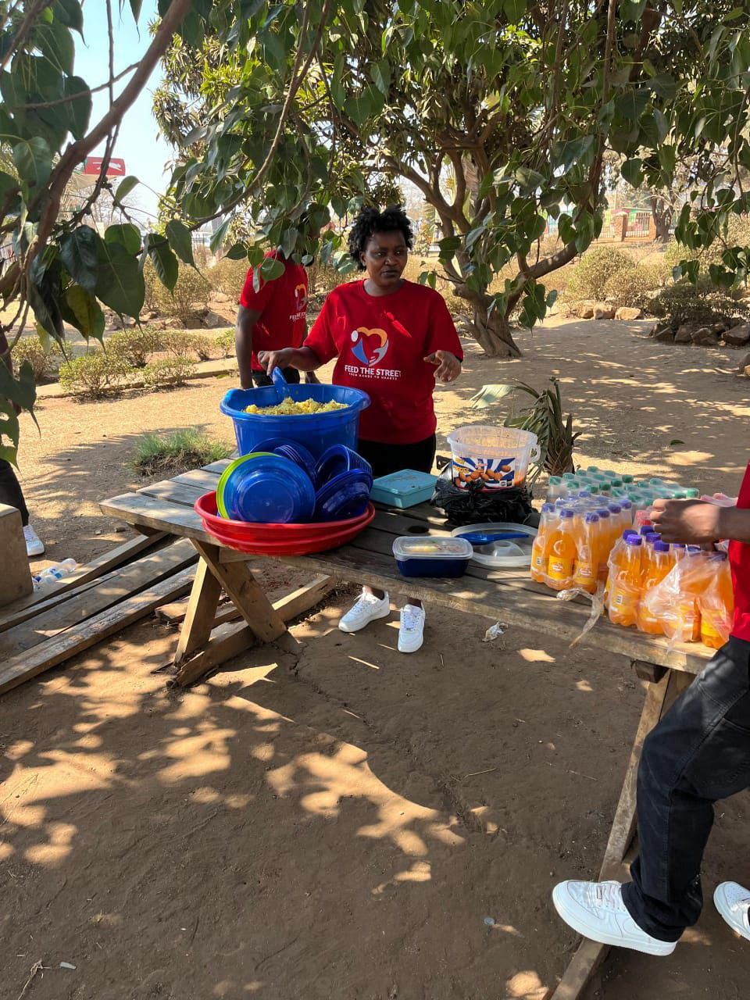
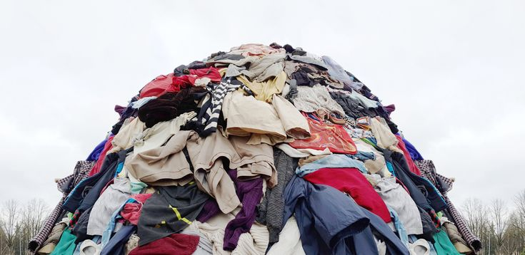
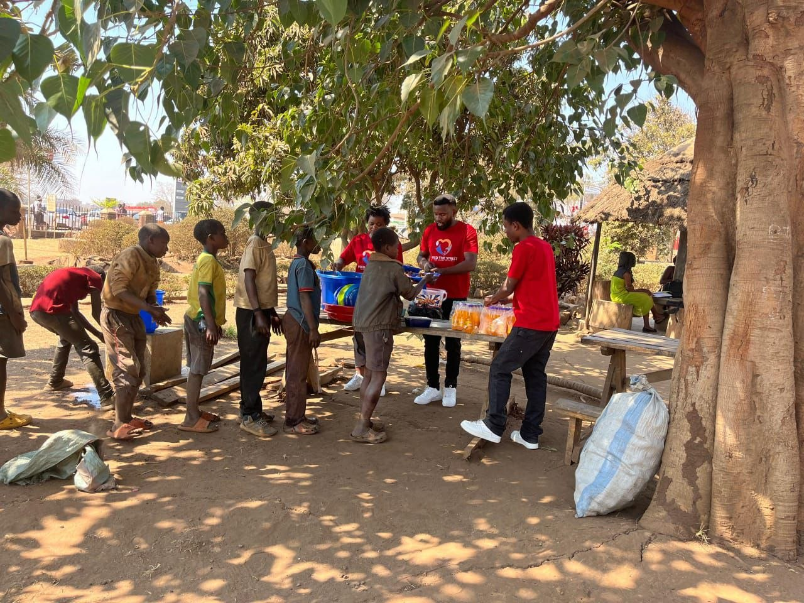
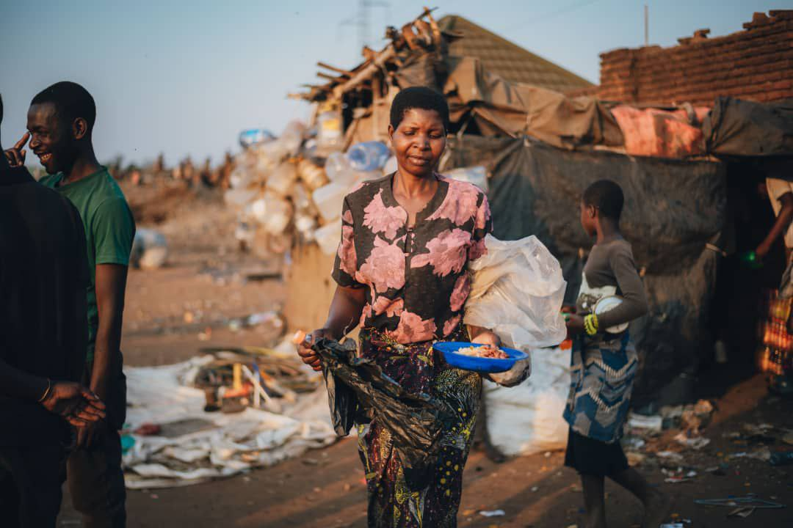

We provide essential support to vulnerable individuals through targeted programs designed to meet immediate needs and restore dignity.

Monthly ProgramOur flagship program involves regular mobile food distribution to homeless and vulnerable individuals in Lilongwe. We prepare and deliver hot meals, fresh produce, and hygiene kits directly to those who need them most.

Essential SupportBeyond food, we distribute clothing, shoes, blankets, and other basic necessities to help protect vulnerable individuals from the elements and provide comfort.

CommunityWe partner with local organizations to host community feeding events, provide guidance and counseling, and connect individuals with resources to help rebuild their lives.

EmergencyRapid-response support during crises — natural disasters, economic shocks, and emergencies — ensuring no community goes hungry in their darkest hour.
Homeless individuals in Lilongwe who lack regular access to food and basic necessities.
Low-income families struggling to meet their basic needs and provide for their children.
Those affected by emergencies, disasters, or sudden economic hardships.
Our activities mainly take place in Lilongwe, especially in areas with high numbers of street-connected people.
Primary distribution City
Regular outreach location
Emergency feeding programs
Expanding reach across Lilongwe
Our programs are designed to provide consistent, reliable support to those who need it most.
Regular monthly feeding programs and essential item distributions
Special outreach events during holidays, crises, or community celebrations